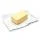
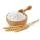
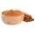
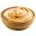
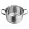
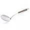
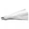
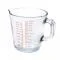
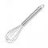

Churros caseiros
Ingredientes (9 porções)
-
250 ml de água
-

2 colheres (sopa) de margarina ou manteiga sem sal
-

300 g de farinha de trigo
-
 óleo para fritar
óleo para fritar
-

canela (misturar com açúcar para passar os churros depois de fritos)
-
 2 colheres (sopa) de açúcar
2 colheres (sopa) de açúcar
-
 1 pitada de sal (se a margarina tiver sal, dispensar a pitada)
1 pitada de sal (se a margarina tiver sal, dispensar a pitada)
-
 3 ovos
3 ovos
-
açúcar
-

doce de leite
Materiais
-

Panela
-

Escumadeira
-

Confeiteiro
-

Copo Medidor
-

Fouet
Modo de preparo
- Aqueça a água em uma panela, abaixe o fogo e acrescente a margarina e o açúcar.
- Mexa bem, até dissolver toda a margarina.
-
Acrescente aos poucos a farinha de trigo, mexendo sempre, até que a massa desprenda
da panela.
-
Tire do fogo e acrescente os ovos um a um, mexendo bem até misturar toda a massa.
-
A seguir, coloque a massa num saco de confeiteiro com o bico em formato de pitanga,
ou na forma própria para churros.
-
Aperte, já dentro da frigideira com o óleo quente, o tamanho fica a seu critério,
corte com a ponta dos dedos ou com uma faca.
- Depois de frito, coloque em papel toalha para que absorva a gordura.
-
Em seguida, passe pelo açúcar com canela e recheie com doce de leite usando o bico
que já vem junto com a forma.
Fonte